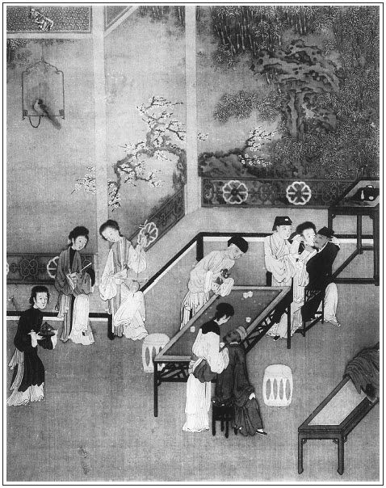

張回此回文，方使娶瓶兒事收拾乾淨也。然則又是將六人一一描寫一番。而二十五回「春晝鞦韆」，猶是第一筆；則此回早已收束二十回，以趕文熱。至二十九回內，一齊結煞也。甚矣，作文固難，看文猶難也，看他用王姑子閒中一笑話，將六人俱提出，便知此回文字之主意也。
第一段，寫月娘；第二段，寫玉樓；而瓶兒、金蓮二人，隨手出落；嬌兒、雪娥二人，遙遙影寫；而孟三姐，特地另寫上壽；見風光與眾不同。至金、瓶二人另結，見始合而終離也。
寫西門、月娘和好是一段，玉樓主謀治酒又是一段，眾人飲酒，又是一段，內插敬濟，為「元夜戲嬌姿」作引。李銘一來，伯爵二人一請，又為桂姐留後文地步。蓋不看破，則西門勢必又娶桂姐來家，而直冷落，又何以為後文穿插點染之用？故又必為之留一地步，而西門之於桂姐，已斷無娶之之情矣。文字經營慘淡，誰識其苦心？是兩段照應的文字。在烹茶傳外者，後接寫玉樓上壽，又將諸人後文俱用行令時自己說出。如金蓮之偷敬濟，瓶兒之死孽，玉樓之歸李衙內，月娘之於後文吳典恩，西門之於一部《金瓶》。一百回內，以月娘避亂，孝哥幻化，與春梅嫁去，守備陣亡作照。雪娥之於來旺，以及受辱為娼，皆一一照出。或隱或現，而昧昧者，乃以為六人行酒令。夫作者吃飯無事，何不可消閒，而乃為人記酒令哉？是故《金瓶》一書，不可輕與人讀。
月娘之於金蓮進門，不怒不怨；而於瓶兒進門，力深怨者何故？蓋金蓮之先，未有金蓮；而瓶兒之先，已有一金蓮也。有一金蓮，而月娘亦為之怨，則金蓮之妒可知矣。
月娘之於西門上氣，由瓶兒故也；因瓶兒上氣之由，又因金蓮故也。則必欲寫月娘與西門不和，總欲襯金蓮之惡，而不盡爾也。觀瓶兒問西門「有金䯼髻沒有」，而西門之對乃帶慚色，則大可知矣。蓋西門利瓶兒之財色，而月娘又專利其財者也。夫利人之財，而人挾其財以來，雖不驕我，我已不堪矣。況乎上房現收其三千元寶，幾箱珠玉，彼雖不言，我已抱愧。兼之金蓮在西門處一跳，月娘處又一挑，安得不老羞成怒？此又必然之勢，月娘之心事也；然而瓶兒已來，倘不一寫，即收轉來，則何所底止？又安得放手寫如錦如火之熱鬧也？故接手即寫西門復和，月娘烹茶之事蓋收轉之筆也。
寫月娘燒香，吾欲定其真偽，以窺作者用筆之意。乃翻捲靡日，不得其故。忽於前瓶兒初來，要來旺看宅子，先被月娘使之送王姑子廟油米去，而知其假也。何則？月娘好佛，起先未著一筆，今忽與瓶兒來之第三日，即出王姑子。後文王姑子引薛姑子，乃至符藥等，無所不為。而先劉婆子引理星，又其明鑒。然則燒香一事，殆王姑子所授之奸謀，而月娘用之而效。故後文紛紛好佛無已，蓋為此也。況王姑子引薛姑子來後，瓶兒念斷七經，薛姑子攬去，而月娘且深惱王姑子，是為薛姑子弄符水，故左袒之也。然而其引尼宣卷，無非欲隱為此奸險之事。則燒香為王姑所授之計，以欺西門無疑也。況此本文言月娘燒香，囑云「不拘姊妹六人之中，早見嗣息」，即此愈知其假。夫因瓶兒而與西門合氣，則怨在瓶兒矣。若雲惱唆挽面門主人，其怨又在金蓮矣．使兼有《周南·樛木》之雅，則不必怨；即怨矣，而乃為之析子，是違心之論也。曰不然。賢婦慕夫，怨而不怒。然而不怨時，不聞其祈子。曰後文「拜求子息」矣。夫正以後文「拜求」之中，全未少及他人一言，且囑薛姑子「休與人言」，則知今日之假。況天下事，有百事之善，而一事之惡，則此一惡為無心；有百事之惡，而一事之善，則此一善必勉強。月娘前後文，其貪人財，乘人短，種種不堪，乃此夜忽然怨而不怒，且居然《麟趾》《關睢》，說得太好，反不像也，況轉身其挾制西門處，全是一團做作，一團權詐，愈襯得燒香數語之假也。故反覆觀之，全是作者用陽秋寫月娘真是權詐不堪之人也。
內金蓮摸香球云「李大姐生了蛋了」，閒閒一語，遂成生子之讖。
詞曰：
並刀如水，吳鹽勝雪，纖手破新橙。錦幄初溫，獸煙不斷，相對坐調笙。
低聲問，向誰行宿，城上已三更。馬滑霜濃，不如休去，直至少人行。張夾黃絹幼婦。
──右調《少年游》

話說西門慶從院中歸家，已一更天氣，到家門首，小廝叫開門，下了馬，踏著那亂瓊碎玉，到於後邊儀門首。只儀門半掩半開，院內悄無人聲。西門慶心內暗道：「此必有蹺蹊。」繡旁有此一疑心，方立得住腳。於是潛身立於儀門內粉壁前，悄悄聽覷。只見小玉出來，穿廊下放桌兒。原來吳月娘自從西門慶與他反目以來，繡旁寫得又淺又深。每月吃齋三次，逢七拜斗焚香，保佑夫主早早回心，西門慶還不知。只見小玉放畢香桌兒。少頃，月娘整衣出來，向天井內滿爐炷香，望空深深禮拜。祝曰：「妾身吳氏，作配西門。奈因夫主留戀煙花，中年無子。妾等妻妾六人，俱無所出，缺少墳前拜掃之人。妾夙夜憂心，恐無所托。是以發心，每夜於星月之下，祝贊三光，要祈佑兒夫，早早回心。棄卻繁華，齊心家事。不拘妾等六人之中，早見嗣息，張旁以此愈知其假如。文旁先生何以知其假？便令是假，婦人能如此挽回丈夫之心，亦算叩頭陪罪了。不知先生之意，果欲何為？以為終身之計，乃妾之素願也。」繡旁此尤人情所難。正是：
私出房櫳夜氣清，一庭香霧雪微明。
拜天訴盡衷腸事，無限徘徊獨自惺。
這西門慶不聽便罷，聽了月娘這一篇言語，不覺滿心慚感道：「原來我一向錯惱了他。他一篇都是為我的心，還是正經夫妻。」忍不住從粉壁前扠步走來，抱住月娘。月娘不防是他大雪裡來到，嚇了一跳，就要推開往屋裡走，被西門慶雙關抱住，說道：「我的姐姐！我西門慶死也不曉的，你一片好心，都是為我的。一向錯見了，丟冷了你的心，到今悔之晚矣。」月娘道：「大雪裡，你錯走了門兒了，敢不是這屋裡。我是那不賢良的淫婦，和你有甚情節？張旁以此知其假。文旁然則以老拳加之乎？以笑臉迎之乎？月餘不理之悶氣，不望其傾吐，先生當更以假批之矣。那討為你的來？你平白又來理我怎的？咱兩個永世千年休要見面！」西門慶把月娘一手拖進房來。燈前看見他家常穿著：大紅璐綢對衿襖兒，軟黃裙子；頭上戴著貂鼠臥兔兒，金滿池嬌分心，張夾百忙裡又寫衣服。妙。又金滿池嬌，又照瓶兒。文旁幸而月娘尚有幾分姿色，否則早被打入冷宮去矣。尚得一見，而使之聞之耶！越顯出他：
粉妝玉琢銀盆臉，蟬髻鴉鬟楚岫雲。繡旁不韻。
那西門慶如何不愛？繡眉此正好德時，忽又插入好色，畢竟德不勝色，可歎，可歎。連忙與月娘深深作了個揖，說道：「我西門慶一時昏昧，不聽你之良言，辜負你之好意。正是有眼不識荊山玉，拿著頑石一樣看。過後方知君子，千萬饒恕我則個。」月娘道：「我又不是你那心上的人兒，凡是投不著你的機會，有甚良言勸你？隨我在這屋裡自生自活，你休要理他。我這屋裡也難安放你，趁早與我出去，我不著丫頭攆你。」張旁以此愈知其假，丑絕。不堪讀下。張夾豈敬夫之言。西門慶道：「我今日平白惹一肚子氣，大雪裡來家，逕來告訴你。」張夾豈敬夫之言。文旁誠非敬夫之言。試問：西門慶可是受人敬的東西？金蓮之呼叱，直以兒呼之，亦不見其不受。此等人見之多矣。真有一句正經話，不能與之說者，必辱罵之而後可。或云：為之妻則不可。然月娘不過搶白，並未破口，曰：「我不著丫頭攆你，望著管你的人去說。」酸味則有之，並非什麼大不敬。閨門之內，更有甚於畫眉者，買賣人之老婆，能如是亦罷了。先生之責人，無乃太苛乎？月娘道：「惹氣不惹氣，休對我說。我不管你，望著管你的人去說。」西門慶見月娘臉兒不瞧，就折疊腿裝矮子，跪在地下，殺雞扯脖，口裡姐姐長，姐姐短。月娘看不上，說道：「你真個恁涎臉涎皮的！我叫丫頭進來。」一面叫小玉。那西門慶見小玉進來，連忙立起來，無計支出他去，說道：「外邊下雪了，一張香桌兒還不收進來？」小玉道：「香桌兒頭裡已收進來了。」月娘忍不住笑道：「沒羞的貨，丫頭跟前也調個謊兒。」繡眉弄一笑作收頭，何等風韻。小玉出去，那西門慶又跪下央及。月娘道：「不看世人面上，一百年不理才好。」文旁六人之中，到底月娘有點骨氣，此後來所以能守而不嫁也。設身處地，略短取長，度理原情，因人論境，始可以評人。批者深惡吳氏，實不解其故，或者其夫婦間，別有一番景況。說畢，方才和他坐在一處，教玉簫捧茶與他吃。西門慶因他今日常家茶會，散後同邀伯爵到李家如何嚷鬧，告訴一遍：「如今賭了誓，再不踏院門了。」月娘道：「你踹不踹，不在於我。你拿響金白銀包著他，你不去，可知他另接了別個漢子？養漢老婆的營生，你拴住他身，拴不住他心。你長拿封皮封著他也怎的？」張夾金蓮且難封皮封住。西門慶道：「你說的是。」於是打發丫鬟出去，脫衣上床，要與月娘求歡。月娘道：「教你上炕就撈食兒吃，張夾豈淑女口角。今日只容你在我床上就夠了，要思想別的事，卻不能夠。」西門慶把那話露將出來，向月娘戲道：「都是你氣的他，中風不語了。大睜著眼兒，說不出話來。」張夾豈教妻的法則？月娘罵道：「好個汗邪的貨，教我有半個眼兒看的上！」西門慶不由分說，把月娘兩隻白生生腿扛在肩膀上，那話插入牝中，張夾帶慚，妙。一任其鶯恣蝶采，殢雨尤雲，未肯即休。正是：得多少──
海棠枝上鶯梭急，翡翠梁間燕語頻。
不覺到靈犀一點，美愛無加，麝蘭半吐，脂香滿唇。西門慶情極，低聲求月娘叫達達；月娘亦低聲睥幃睨枕，態有餘妍，繡旁八字銷魂。口呼親親不絕。是夜，兩人雨意雲情，並頭交頸而睡。正是：
亂鬢雙橫興已饒，情濃猶復厭通宵。
晚來獨向妝台立，淡淡春山不用描。張旁可想。
當夜夫妻交歡不題。卻表次日清晨，孟玉樓走到潘金蓮房中，未曾進門，先叫道：「六丫頭，起來了不曾？」張旁所以說玉樓終始金、瓶、梅三人，看此處收拾瓶兒文字便知。春梅道：「俺娘才起來梳頭哩。三娘進屋裡坐。」玉樓進來，只見金蓮正在梳台前整掠香雲。因說道：「我有樁事兒來告訴你，你知道不知？」金蓮道：「我在這背哈喇子，誰曉的！」因問：「甚麼事？」玉樓道：「他爹昨夜二更來家，走到上房裡，和吳家的好了，繡旁不悅口角。在他房裡歇了一夜。」金蓮道：「俺們何等勸著，他說一百年二百年，又怎的平白浪著，自家又好了？又沒人勸他！」玉樓道：「今早我才知道。俺大丫頭蘭香，在廚房內聽見小廝們說，昨日他爹同應二在院裡李桂兒家吃酒，看出淫婦的甚麼破綻，把淫婦門窗戶壁都打了。大雪裡著惱來家，進儀門，看見上房燒夜香，想必聽見些甚麼話兒，繡旁包括得妙。兩個才到一搭哩。丫頭學說，兩個說了一夜話。說他爹怎的跪著上房的叫「媽媽」，繡旁稍訛，妙。上房的又怎的聲喚擺話的，磣死了。像他這等就沒的話說。若是別人，又不知怎的說浪！」繡眉語雖吹毛求疵，說來亦自有理，尖算人齒牙，可畏如此。張夾「不滿服嫁人」一語之恨也。金蓮接說道：「早是與人家做大老婆，還不知怎樣久慣牢成！張旁深文曲筆，借妒口說明。一個燒夜香，只該默默禱祝，誰家一徑倡揚，使漢子知道了。又沒人勸，自家暗裡又和漢子好了。硬到底才好，乾淨假撇清！」玉樓道：「也不是假撇清，繡旁接妙。他有心也要和，只是不好說出來的。他說他是大老婆不下氣，張旁更令深心人沒存站處。到叫俺們做分上，怕俺們久後玷言玷語說他，敢說你兩口子話差，也虧俺們說和。繡眉揣度處如見肺肝，玉樓亦有此私心微眼，可見美人未有不聰慧者。如今你我休教他買了乖兒去。你快梳了頭，過去和李瓶兒說去。咱兩個每人出五錢銀子，叫李瓶兒拿出一兩來，原為他的事起。今日安排一席酒，一者與他兩個把一杯，二者當家兒只當賞雪，耍戲一日，有何不可？」金蓮道：「說的是。不知他爹今日有勾當沒有？」玉樓道：「大雪裡有甚勾當？我來時兩口子還不見動靜，張夾妙。又映出。上房門兒才開，小玉拿水進去了。」這金蓮慌忙梳畢頭，和玉樓同過李瓶兒這邊來。李瓶兒還睡著在床上，迎春說：「三娘、五娘來了。」玉樓、金蓮進來，說道：「李大姐，好自在。這咱時懶龍才伸腰兒。」金蓮說舒進手去被窩裡，摸見薰被的銀香球兒，繡旁奇想。道：「李大姐生了蛋了。」繡旁讖語，妙。張夾又為「生子」作影。就掀開被，見他一身白肉。那李瓶兒連忙穿衣不迭。玉樓道：「五姐，休鬼混他。李大姐，你快起來，俺們有樁事來對你說。如此這般，他爹昨日和大姐姐好了，咱每人五錢銀子，你便多出些兒，當初因為你起來。張夾又點出。今日大雪裡，只當賞雪，咱安排一席酒兒，請他爹和大姐姐坐坐兒，好不好？」李瓶兒道：「隨姐姐教我出多少，奴出便了。」金蓮道：「你將就只出一兩兒罷。繡旁弄阿呆口角，妙。你秤出來，俺好往後邊問李嬌兒、孫雪娥要去。」這李瓶兒一面穿衣纏腳，叫迎春開箱子，拿出銀子。拿了一塊，金蓮上等子秤，重一兩二錢五分。玉樓叫金蓮伴著李瓶兒梳頭：「等我往後邊問李嬌兒和孫雪娥要銀子去。」
金蓮看著李瓶兒梳頭洗面，約一個時辰，只見玉樓從後邊來說道：「我早知也不幹這營生。大家的事，像白要他的。小淫婦說：『我是沒時運的人，漢子再不進我房裡來，我那討銀子？』求了半日，只拿出這根銀簪子來，你秤秤重多少？」張夾寫雪娥，妙絕。金蓮取過等子來秤，只重三錢七分。因問：「李嬌兒怎的？」玉樓道：「李嬌兒初時只說沒有，『雖是錢日逐打我手裡使，都是叩數的。使多少交多少，那裡有富餘錢？』我說：『你當家還說沒錢，俺們那個是有的？繡眉只一銀子輕重，不知作多少波瀾，奇思妙筆。六月日頭，沒打你門前過也怎的？大家的事，你不出罷！』教我使性子走了出來，他慌了，使丫頭叫我回去，才拿出這銀子與我。沒來由，教我恁惹氣剌剌的！」金蓮拿過李嬌兒銀子來秤了秤，只四錢八分。因罵道：「好個奸滑的淫婦！隨問怎的，綁著鬼也不與人家足數，好歹短幾分。」玉樓道：「只許他家拿黃捍等子秤人的。繡旁想得到。人問他要，只象打骨禿出來一般，不知教人罵了多少！」一面連玉樓、金蓮共湊了三兩一錢；一面使繡春叫了玳安來。金蓮先問他：「你昨日跟了你爹去，在李家為什麼著了惱來？」繡旁補一問，點水不漏。玳安悉把在常家會茶散的早，邀應二爹和謝爹同到李家，他鴇子回說不在家，往五姨媽家做生日去了。「不想落後爹淨手，到後邊親看見粉頭和一個蠻子吃酒，爹就惱了。不由分說，叫俺眾人把淫婦家門窗戶壁盡力打了一頓，只要把蠻子、粉頭墩鎖在門上。多虧應二爹眾人再三勸住。爹使性騎馬回家，在路上發狠，到明日還要擺佈淫婦哩。」
金蓮道：「賊淫婦！我只道蜜罐兒長年拿的牢牢的，如何今日也打了？」張夾如吮出。又問玳安：「你爹真個恁說來？」繡旁重問一句，喜甚。張夾如吮出。玳安道：「莫是小的敢哄娘！」金蓮道：「賊囚根子，他不揪不採，也是你爹的婊子，許你罵他？繡旁又起一簇花頭。想著迎頭兒我們使著你，只推不得閒，『爹使我往桂姨家送銀子去哩！』叫的桂姨那甜！如今他敗落了來，你主子惱了，連你也叫他淫婦來了！看我明日對你爹說不說。」張夾寫得意之極。卻又如此寫出。妙妙。玳安道：「耶樂！五娘這回日頭打西出來，從新又護起他家來了！莫不爹不在路上罵他淫婦，小的敢罵他？」金蓮道：「許你爹罵他罷了，原來也許你罵他？」玳安道：「早知五娘麻犯小的，小的也不對五娘說。」玉樓便道：「小囚兒，你別要說嘴。繡旁接得妙。這裡三兩一錢銀子，你快和來興兒替我買東西去。今日俺們請你爹和大娘賞雪。你將就少落我們些兒，我教你五娘不告你爹說罷。」玳安道：「娘使小的，小的敢落錢？」於是拿了銀子同來興兒買東西去了。
且說西門慶起來，正在上房梳洗。只見大雪裡，來興買了雞鵝嗄飯，逕往廚房裡去了。玳安又提了一壇金華酒進來。便問玉簫：「小廝的東西，是那裡的？」玉簫回道：「今日眾娘置酒，請爹娘賞雪。」西門慶道：「金華酒是那裡的？」玳安道：「是三娘與小的銀子買的。」西門慶道：「啊呀！家裡見放著酒，又去買！」吩咐玳安：「拿鑰匙，前邊廂房有雙料茉莉酒，提兩壇攙著這酒吃。」於是在後廳明間內，設錦帳圍屏，放下梅花暖簾，爐安獸炭，擺列酒席。不一時，整理停當。李嬌兒、孟玉樓、潘金蓮、李瓶兒來到，張夾雪娥出分不來，妙絕。請西門慶、月娘出來。當下李嬌兒把盞，孟玉樓執壺，潘金蓮捧菜，李瓶兒陪跪，頭一鍾先遞了與西門慶。西門慶接酒在手，笑道：「我兒，多有起動，孝順我老人家常禮兒罷！」那潘金蓮嘴快，插口道：「好老氣的孩兒！誰這裡替你磕頭哩？俺們磕著你，你站著。『羊角蔥靠南牆──越發老辣』！若不是大姐姐帶攜你，俺們今日與你磕頭？」張夾尖極。一面遞了西門慶，從新又滿滿斟了一盞，請月娘轉上，遞與月娘。月娘道：「你們也不和我說，誰知你們平白又費這個心。」玉樓笑道：「沒甚麼。俺們胡亂置了杯水酒兒，大雪，與你老公婆兩個散悶而已。姐姐請坐，受俺們一禮兒。」月娘不肯，亦平還下禮去。張夾治酒散悶可。再行禮，是何緣故？不言而月娘深愧矣。玉樓道：「姐姐不坐，我們也不起來。」相讓了半日，月娘才受了半禮。金蓮戲道：「對姐姐說過，今日姐姐有俺們面上，寬恕了他。下次再無禮，衝撞了姐姐，俺們也不管了。」繡眉似戲語卻是本題，非金蓮不敢說，亦說不出。妙舌可想。望西門慶說道：「你裝憨打勢，還在上首坐，還不快下來，與姐姐遞個鐘兒，陪不是哩！」張夾尖極，利極。何物文心，巧滑至此。西門慶只是笑。良久，遞畢，月娘轉下來，令玉簫執壺，亦斟酒與眾姊妹回酒。惟孫雪娥跪著接酒，張夾此處忽入雪娥，更妙。其餘都平敘姊妹之情。
於是西門慶與月娘居上座，其餘李嬌兒、孟玉樓、潘金蓮、李瓶兒、孫雪娥並西門大姐，都兩邊打橫。金蓮便道：「李大姐，你也該梯己與大姐姐遞杯酒兒，當初因為你的事起來，你做了老林，怎麼還恁木木的！」繡眉老著臉兒捉弄人，卻又申明前意，尖甚，狡甚。那李瓶兒真個就就走下席來要遞酒。繡旁酷肖。被西門慶攔住，說道：「你休聽那小淫婦兒，他哄你。繡旁不得不護。已是遞過一遍酒罷了，遞幾遍兒？」張夾寫天性刻薄，至金蓮盡矣。那李瓶兒方不動了。當下春梅、迎春、玉簫、蘭香一般兒四個家樂，琵琶、箏、弦子、月琴，一面彈唱起來，唱了一套《南石榴花》「佳期重會」繡旁尖得妙。。西門慶聽了，便問：「誰叫他唱這一套詞來？」玉簫道：「是五娘吩咐唱來。」
西門慶就看著潘金蓮說道繡旁畫。：「你這小淫婦，單管胡枝扯葉的！」金蓮道：「誰教他唱他來？沒的又來纏我。」月娘便道：「怎的不請陳姐夫來坐坐？」張夾又為元夜戲金蓮、蕙蓮事作俑。月娘可殺。一面使小廝前邊請去。不一時，敬濟來到，向席上都作了揖，就在大姐下邊坐了。月娘令小玉安放了鍾箸，閤家歡飲。張夾然而武、花二家，煙消火冷矣。可恨，可歎。西門慶把眼觀看簾前那雪，如撏綿扯絮，亂舞梨花，下的大了。端的好雪。但見：
初如柳絮，漸似鵝毛。唰唰似數蟹行沙上，紛紛如亂瓊堆砌間。但行動衣沾六出，只頃刻拂滿蜂鬢。襯瑤台，似玉龍翻甲繞空舞；飄粉額，如白鶴羽毛連地落。
正是：
凍合玉樓寒起粟，光搖銀海燭生花。張夾月娘掃雪，正是玉樓受困處。
吳月娘見雪下在粉壁間太湖石上甚厚。下席來，教小玉拿著茶罐，親自掃雪，烹江南鳳團雀舌牙茶張夾是清河人。與眾人吃。
正是：
白玉壺中翻碧浪，紫金盃內噴清香。張夾是市井人喫茶。
正喫茶中間，只見玳安進來，說道：「李銘來了，在前邊伺候。」西門慶道：「教他進來。」不一時，李銘進來向眾人磕了頭，走在旁邊。西門慶問道：「你往那裡去來？來得正好。」李銘道：「小的沒往那裡去，北邊酒醋門劉公公那裡，教了些孩子，小的瞧了瞧。記掛著爹娘內姐兒們，還有幾段唱未合拍，來伺候。」張夾何以偏是今日記起？寫桂姐處使來如畫。而西門一愚至此也。西門慶就將手內吃的那一盞木樨茶，遞與他吃。張旁月娘掃雪烹茶以供李銘，罵絕西門矣。說道：「你吃了休去，且唱一個我聽。」李銘道：「小的知道。」一面下邊吃了茶上來，把箏弦調定，頓開喉音，並足朝上，唱了一套《冬景·絳都春》。唱畢，西門慶令李銘近前，賞酒與他吃，教小玉拿壺滿斟，傾在銀琺琅桃兒鍾內。那李銘跪在地下，滿飲三杯。西門慶又叫在桌上拿了四碟菜，用盤子托著與李銘。那李銘走到下邊吃了，用絹兒把嘴抹了，走到上邊，直豎豎的靠著隔子站立。張夾如畫。西門慶因把昨日桂姐家之事，告訴一遍。李銘道：「小的並不知道，一向也不過那邊去。想起來不干桂姐事，都是俺三媽干的營生。繡旁解得冷。爹也別要惱他，等小的見他說他便了。」張夾小人可畏。當日飲酒到一更時分，妻妾俱各歡樂。先是陳敬濟、大姐往前邊去了。落後酒闌，西門慶又賞李銘酒，打發出門，分咐：「你到那邊，休說今日在我這裡。」張夾愚極。李銘道：「爹吩咐，小的知道。」西門慶令左右送他出門，於是妻妾各散。西門慶還在月娘上房歇了。有詩為證：
赤繩緣分莫疑猜，扊扅夫妻共此懷。
魚水相逢從此始，兩情願保百年諧。
卻說次日雪晴，應伯爵、謝希大受了李家燒鵝瓶酒，恐怕西門慶擺佈他家，逕來邀請西門慶進裡邊陪禮。月娘早晨梳妝畢，正和西門慶在房中吃餅，只見玳安來說：「應二爹和謝爹來了。」西門慶放下餅，就要往前走。月娘道：「兩個勾使鬼，又不知來做甚麼。你亦發吃了出去，教他外頭等著去。慌的恁沒命的一般往外走怎的？大雪裡又不知勾了那去？」西門慶道：「你叫小廝把餅拿到前邊，我和他兩個吃罷。」說著，起身往外來。張夾如畫。月娘吩咐：「你和他吃了，別要信著又勾引的往那裡去了。今日孟三姐晚夕上壽哩。」張眉玉樓這一個生日為始，至後七十五回生日作終，是大章法。西門慶道：「我知道。」於是與應、謝二人相見聲喏，說道：「哥昨日著惱家來了，俺們甚是怪說他家：『從前已往，在你家使錢費物，雖故一時不來，休要改了腔兒才好，許你家粉頭背地偷接蠻子？冤家路兒窄，又被他親眼看見，他怎的不惱！休說哥惱，俺們心裡也看不過！』盡力說了他娘兒幾句，他也甚是沒意思。今日早請了俺兩個到家，娘兒們哭哭啼啼跪著，恐怕你動意，置了一杯水酒兒，好歹請你進去陪個不是。」繡旁沒得說，雖百口何辭。西門慶道：「我也不動意。我再也不進去了。」伯爵道：「哥惱有理。但說起來，也不干桂姐事。這個丁二官原先是他姐姐桂卿的孤老，也沒說要請桂姐。只因他父親貨船搭在他鄉里陳監生船上，才到了不多兩日。這陳監生號兩淮，乃是陳參政的兒子。丁二官拿了十兩銀子，在他家擺酒請陳監生。才送這銀子來，不想你我到了他家，就慌了，躲不及，把個蠻子藏在後邊，被你看見了。實告不曾和桂姐沾身。今日他娘兒們賭身發咒，磕頭禮拜，央俺二人好歹請哥到那裡，把這委屈情由也對哥表出，也把惱解了一半。」西門慶道：「我已是對房下賭誓，張夾豈對朋友的話？再也不去，又惱甚麼？你上覆他家，到不消費心。我家中今日有些小事，委的不得去。」慌的二人一齊跪下，繡旁急著。說道：「哥，甚麼話！不爭你不去，顯的我們請不得哥去，沒些面情了。到那裡略坐坐兒就來也罷。」當下二人死告活央，說的西門慶肯了。張夾不人可畏。不一時，放桌兒，留二人吃餅。須臾吃畢，令玳安取衣服去。月娘正和孟玉樓坐著，便問玳安：「你爹要往那去？」玳安道：「小的不知，爹只叫小的取衣服。」月娘罵道：「賊囚根子，你還瞞著我不說！今日你三娘上壽哩。你爹但來晚了，我只打你這個賊囚根子。」玳安道：「娘打小的，管小的甚事？」月娘道：「不知怎的，聽見他這老子每來，恰似奔命的一般，吃著飯，丟下飯碗，往外不迭。又不知勾引遊魂撞屍，撞到多咱才來！」家中置酒等候不題。
且說西門慶被兩個邀請到李家，又早堂中置了一席齊整酒餚，叫了兩個妓女彈唱。李桂姐與桂卿兩個打扮迎接。老虔婆出來，跪著陪禮。姐兒兩個遞酒。應伯爵、謝希大在旁打諢耍笑，向桂姐道：「還虧我把嘴頭上皮也磨了半邊去，請了你家漢子來。就連酒兒也不替我遞一杯兒，只遞你家漢子！剛才若他撅了不來，休說你哭瞎了你眼，繡眉此時最難置辨，故桂姐全不開口，只借伯爵戲笑語隱隱達情。此文家躲閃法。唱門詞兒，到明日諸人不要你，只我好說話兒將就罷了。」桂姐罵道：「怪應花子，汗邪了你！我不好罵出來的。可可兒的我唱門詞兒來？」應伯爵道：「你看賊小淫婦兒！念了經打和尚，他不來慌的那腔兒，這回就翅膀毛兒干了。你過來，且與我個嘴溫溫寒著。」於是不由分說，摟過脖子來就親了個嘴。桂姐笑道：「怪攮刀子的，看推撒了酒在爹身上。」伯爵道：「小淫婦兒，會喬張致的，這回就疼漢子。『看撒了爹身上酒！』叫你爹那甜。我是後娘養的？怎的不叫我一聲兒？」桂姐道：「我叫你是我的孩兒。」伯爵道：「你過來，我說個笑話兒你聽：一個螃蟹與田雞結為兄弟，賭跳過水溝兒去便是大哥。田雞幾跳，跳過去了。螃蟹方欲跳，撞遇兩個女子來汲水，用草繩兒把他拴住，打了水帶回家去。臨行忘記了，不將去。田雞見他不來，過來看他，說道：『你怎的就不過去了？』螃蟹說：『我過的去，倒不吃兩個小淫婦捩的恁樣了！』」張夾又點出賠禮。桂姐兩個聽了，一齊趕著打，把西門慶笑的要不的。
不說這裡調笑頑耍，且說家中吳月娘一者置酒回席，二者又是玉樓上壽，吳大妗子、楊姑娘並兩個姑子，都在上房裡坐的。張旁兩尼便來，愈知燒香之假。看看等到日落時分，不見西門慶來家，急的月娘要不的。金蓮拉著李瓶兒，笑嘻嘻向月娘說道：「大姐姐，他這咱不來，俺們往門首瞧他瞧去。」月娘道：「耐煩瞧他怎的！」繡旁酷肖。金蓮又拉玉樓說：「咱三個打伙兒走走去。」玉樓道：「我這裡聽大師父說笑話兒哩，等聽說了笑話兒咱去。」那金蓮方住了腳，圍著兩個姑子聽說笑話兒，因說道：「大師父，你有，快些說。」那王姑子坐在坑上，就說了一個。張夾先虛寫一筆。金蓮道：「這個不好。再說一個。」繡旁好頓挫。王姑子又道：「一家三個媳婦兒，與公公上壽。先是大媳婦遞酒說：『公公好像一員官。』公公云：『我如何象官？』媳婦云：『坐在上面，家中大小都怕你，如何不像官？』張夾又一陪。次該二媳婦上來遞酒，說：『公公象虎威皂隸。』公公曰：『我如何象虎威皂隸？』媳婦云：『你喝一聲，家中大小都吃一驚，怎不像皂隸？』張夾又一陪。公公道：『你說的我好！』該第三媳婦遞酒，上來說：『公公也不像官，也不像皂隸。』公公道：『卻像甚麼？』媳婦道：『公公像個外郎！』公公道：『我如何像個外郎？』媳婦道：『不像外郎，如何六房裡都串到？』」繡旁切得妙。張夾至此六個皆全，故特特點出。把眾人都笑了。金蓮道：「好禿子！把俺們都說在裡頭。那個外郎敢恁大膽！」說罷，金蓮、玉樓、李瓶兒同來到前邊大門首，瞧西門慶。玉樓問道：「今日他爹大雪裡那裡去了？」金蓮道：「我猜他一定往院中李桂兒那淫婦家去了。」玉樓道：「打了一場，賭誓再不去，如何又去？咱每賭甚麼？管情不在他家。」張夾寫玉樓襯金蓮。金蓮道：「李大姐做證見，你敢和我拍手麼？我說今日往他家去了。前日打了淫婦家，昨日李銘那忘八先來打探子兒。繡眉畢竟金蓮心細。張夾又點。今日應二和姓謝的，大清早晨，勾使鬼勾了他去。我猜老虔婆和淫婦鋪謀定計叫了去，不知怎的撮弄，陪著不是，還要回爐復帳，不知涎纏到多咱時候。有個來的成來不成，大姐姐還只顧等著他！」玉樓道：「就不來，小廝也該來家回一聲兒。」正說著，只見賣瓜子的過來，繡旁文情閒甚。兩個正在門首買瓜子兒，忽然西門慶從東來了，三個往後跑不迭。
西門慶在馬上，教玳安先頭裡走：「你瞧是誰在大門首？」玳安走了兩步，說道：「是三娘、五娘、六娘在門首買瓜子哩。」西門慶到家下馬，進入後邊儀門首。玉樓、李瓶兒先去上房報月娘去了。獨有金蓮藏在粉壁背後黑影裡。西門慶撞見，嚇了一跳，說道：「怪小淫婦兒，猛可諕我一跳！張夾又為燒香夜粉壁遙照，且為後玉樓生日粉壁遙照。你們在門首做甚麼來？」金蓮道：「你還敢說哩。你在那裡？這時才來，教娘們只顧在門首等著你。」西門慶進房中，月娘安排酒餚，教玉簫執壺，大姐遞酒。張夾月娘還席也。先遞了西門慶，然後眾姊妹都遞了，安席坐下。春梅、迎春下邊彈唱，吃了一回，都收下去。從新擺上玉樓上壽的酒，張眉不用玉簫，月娘還席故也。不用蘭香，玉樓上壽故也。一絲不亂。並四十樣細巧各樣的菜碟兒上來。壺斟美醞，盞泛流霞。讓吳大妗子上坐。吃到起更時分，大妗子吃不多酒，歸後邊去了。止是吳月娘同眾人陪西門慶擲骰猜枚行令。輪到月娘跟前，月娘道：「既要我行令，照依牌譜上飲酒：一個牌兒名，兩個骨牌名，合《西廂》一句。」月娘先說：「六娘子醉楊妃，落了八珠環，游絲兒抓住荼䕷架。」不遇。該西門慶擲，說：「虞美人，見楚漢爭鋒，傷了正馬軍，只聽耳邊金鼓連天震。」果然是個正馬軍，吃了一杯。該李嬌兒，說：「水仙子，因二士入桃源，驚散了花開蝶滿枝，只做了落紅滿地胭脂冷。」不遇。次該金蓮擲，說道：「鮑老兒，臨老入花叢，壞了三綱五常，問他個非奸做賊拿。」繡旁行一個令，卻又自家道出自家病痛，弄筆極矣。果然是三綱五常，吃了一杯。張夾金蓮令已伏敬濟。輪該李瓶兒擲，說：「端正好，搭梯望月，等到春分晝夜停，那時節隔牆兒險化做望夫山。」張夾瓶兒已伏死。不遇。該孫雪娥，說：「麻郎兒，見群鴉打鳳，絆住了折足雁，好教我兩下裡做人難。」張夾已伏來旺。不遇。落後該玉樓完令，說：「念奴嬌，醉扶定四紅沉，拖著錦裙襴，得多少春風夜月銷金帳。」張夾為今夜本題作映。又為玉樓占身份也。正擲了四紅沉。月娘滿令，叫小玉：「斟酒與你三娘吃。」說道：「你吃三大杯才好！今晚你該伴新郎宿歇。」因對李瓶兒、金蓮眾人說：「吃畢酒，咱送他兩個歸房去。」金蓮道：「姐姐嚴令，豈敢不依！」把玉樓羞的要不的。
少頃酒闌，月娘等相送西門慶到玉樓房首方回。玉樓讓眾人坐，都不坐。金蓮便戲玉樓道：「我兒，好好兒睡罷。你娘明日來看你，休要淘氣！」因向月娘道：「親家，孩兒小哩，看我面上，凡是擔待些兒罷。」玉樓道：「六丫頭，你老米醋，挨著做。我明日和你答話。」金蓮道：「我『媒人婆上樓子──老娘好耐驚耐怕兒』。」於是和李瓶兒、西門大姐一路去了。剛走到儀門首，不想李瓶兒被地滑了一交。這金蓮遂怪喬叫起來道：「這個李大姐，只像個瞎子，行動一磨子就倒了。我搊你去，倒把我一隻腳踩在雪裡，把人的鞋兒也踹泥了！」月娘聽見，說道：「就是儀門首那堆子雪。我吩咐了小廝兩遍，賊奴才，白不肯抬，只當還滑倒了。」張夾是月娘話。因叫小玉：「你拿個燈籠送送五娘、六娘去。」西門慶在房裡向玉樓道：「你看賊小淫婦兒！他踹在泥裡把人絆了一交，他還說人踹泥了他的鞋，恰是那一個兒，就沒些嘴抹兒。張夾此處已伏偏愛矣。恁一個小淫婦！昨日叫丫頭們平白唱『佳期重會』，我就猜是他幹的營生。」玉樓道：「『佳期重會』是怎的說？」西門慶道：「他說吳家的不是正經相會，是私下相會。恰似燒夜香，有心等著我一般。」繡眉金蓮俏心微意，只到此時轉從西門慶口中表出，又深又冷，純是史遷之妙。張夾又點出。玉樓道：「六姐他諸般曲兒到都知道，俺們卻不曉的。」西門慶道：「你不知，這淫婦單管咬群兒。」
不說西門慶在玉樓房中宿歇。單表潘金蓮、李瓶兒兩個走著說話，走到儀門，大姐便歸前邊廂房去了。小玉打著燈籠，送二人到花園內。金蓮已帶半酣，拉著李瓶兒道：「二娘，我今日有酒了，你好歹送到我房裡。」李瓶兒道：「姐姐，你不醉。」須臾，送到金蓮房內。打發小玉回後邊，留李瓶兒坐，喫茶。金蓮又道：「你說你那咱不得來，虧了誰？誰想今日咱姊妹在一個跳板兒上走，不知替你頂了多少瞎缸，教人背地好不說我！奴只行好心，自有天知道罷了。」繡眉倚酒三分，冷一句，熱一句；又譏諷，又要強，又討好，金蓮心口瞭然。李瓶兒道：「奴知道姐姐費心，恩當重報，不敢有忘。」金蓮道：「得你知道，好了。」張夾瓶兒與月娘入門不捨，至此方完。作者放筆，想其滿身痛快也。不一時，春梅拿茶來吃了，李瓶兒告辭歸房。金蓮獨自歇宿，不在話下。正是：
空庭高樓月，非復三五圓。
何須照床裡，終是一人眠。
文回文禹門云：吳月娘原不能稱大賢大德之婦，設使其于歸詩禮之家，而濡染刑於之化，唱隨相得，家室定宜，丈夫愛其溫柔，姬妾喜其覆庇，縱不能追蹤荇菜，亦當無愧於蘋蘩也。或問何以知之？吾於西門生前所容，西門死後能守信之也。至於居家小節，持家大體，其間別有學問，即治國亦此規模，為文人志士之所難能，而責成於婦人女子，不亦謬乎？而況人因境轉，境隨時移，不幸而為西門慶之妻，固已辱於泥塗而墮入陷阱也。試思西門慶何如人乎？或為其嚴父，或為其明師，或為其難兄，或為其畏友，尚不知能挽回一、二否？為其以下之人，竟欲禁止而救正之也，勢必有所不能。與此等人相處，而又為其妻，居然不受其辱，已可謂明哲保身，又復能悔其心，真可謂經權得法矣。
蓋良人者，妻妾所仰望而終身世也。夫可棄其妻，妻不可絕其夫。求子一層，縱然是假，卻亦假得大方。有此心始能有此事，行此事尚欲誅其心，責人無已時，想必以金蓮之品簫，瓶兒之馬扒，為是真不假。嗟乎！錯矣，大誤矣。
彼以收瓶兒之物為月娘罪，此不過小家女兒眼皮淺，並非殺人放火劫來者，亦非養漢偷人騙來者，況有為首者在。且有罪坐家長知情一層，無非責以不應，亦何至深惡痛絕，直以大奸大惡，竟置諸淫婦於寬典也。是誠何心哉！如以收其財不應阻其娶，豈瓶兒為必應娶之人，實為不可不娶之人乎？曾亦思瓶兒之未來，豈因月娘之所阻乎？瓶兒之竟來，又豈月娘之所能阻乎？西門慶惱月娘，非西門慶而亦惱月娘，是又一西門慶也。
按：此評誤置於九十八回後，系裝釘錯簡所致。